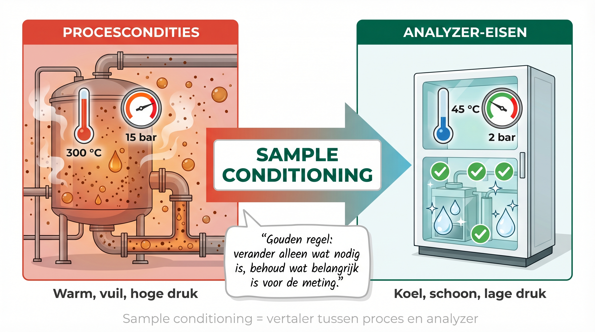
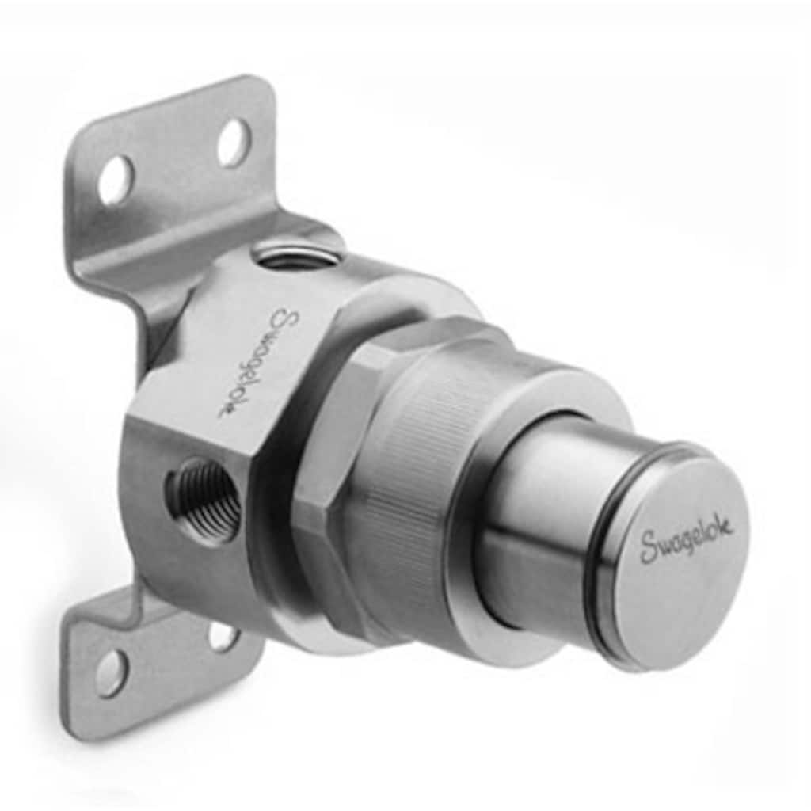
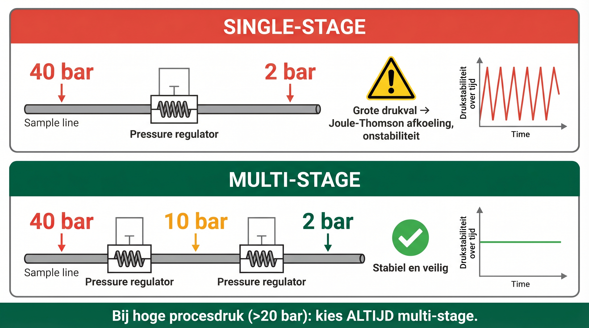

Na het volgen van dit hoofdstuk kun je:
Van proces naar analyzer: Het moet schoon en op de juiste conditie
Stel je voor: je gaat naar de huisarts voor een bloedtest. De verpleegkundige neemt een buisje bloed af. Maar wat gebeurt er daarna?
De directe methode: Het buisje bloed meteen in het meetapparaat stoppen - maar bloedcellen, stolsels en de verkeerde temperatuur maken dat de meting niet klopt.
De professionele methode: Het bloed wordt eerst behandeld - centrifugeren om cellen te scheiden, op de juiste temperatuur brengen, soms een stof toevoegen tegen stolling. Pas dan kan het lab de werkelijke waarden meten.
Dit voorbeeld laat zien waarom monstervoorbereiding (sample conditioning) zo belangrijk is in de procesindustrie. Net als bij bloedonderzoek moet een monster uit het proces worden "klaargemaakt" voordat de analyzer betrouwbaar kan meten.
De uitdaging: Van procesomstandigheden naar analyzer-eisen
Een voorbeeld: Een zuurstofanalyzer heeft specifieke eisen:
Het belangrijkste principe van monstervoorbereiding

De gouden regel van monstervoorbereiding: verander alleen wat nodig is
De gouden regel is: "Verander alleen wat nodig is voor de analyzer, behoud alles wat belangrijk is voor de meting."
Dit betekent dat je een balans moet vinden tussen:
Hoe langer het monster onderweg is naar de analyzer, hoe groter de kans dat er iets verandert. Bovendien is het belangrijk de tijd tussen sample name en de uiteindelijke meting zo kort mogelijk is:
Waarom filteren? Een dagelijkse uitdaging in de plant
Stel je voor: je werkt in een raffinaderij en je analyzer moet continu de samenstelling van een gasstroom meten. Maar die gasstroom komt rechtstreeks uit het proces - en daar zit van alles in wat er eigenlijk niet in hoort. De productstroom zal ook vuil bevatten, Roestdeeltjes van oude leidingen, stofjes uit de lucht, katalysator-deeltjes van de reactor, condensaatdruppels. Als al dat vuil rechtstreeks je analyzer ingaat, dan duurt het niet lang voordat je problemen krijgt.
Filtratie betekent simpelweg: al dat vuil eruit halen voordat het schade kan aanrichten. Denk aan het verschil tussen kraanwater drinken in Nederland (gefilterd, schoon) en water drinken uit een sloot (ongefilterd, vol troep). Het principe is hetzelfde: je wilt alleen het zuivere deel hebben.
Maar waarom is dit zo belangrijk? Vaste deeltjes in je monster zijn echt een probleem. Ze kunnen reduceers, naaldventielen, flowmeters, leidingen, en kleppen verstoppen, waardoor er geen flow meer is en daardoor die niet meer goed werken. Ze kunnen je sensor bedekken met een laagje troep, waardoor die niet meer goed meet. En ze kunnen de meting zelf verstoren - bijvoorbeeld door licht te blokkeren in een optische analyzer.
Zwevende deeltjes - denk aan stof, roest of zand - zijn vooral gevaarlijk voor gevoelige analyzers. Een sensor die bedekt raakt met een laagje vuil, zal een afwijkende meetwaarde kunnen geven. Optische vensters (waar licht doorheen moet) kunnen bekrast raken, waardoor de analyzer onbruikbaar wordt. En soms zorgen die deeltjes voor valse alarmen, omdat de analyzer denkt dat er iets mis is terwijl het gewoon vuil is.

Sample filter (Swagelok) – beschermt de analyzer tegen vaste deeltjes uit het proces
Verschillende soorten filters - van grof naar fijn
Net zoals je bij koffiezetten verschillende filters hebt (grove zeef voor grote stukken, fijn filter voor de koffie), gebruik je in de plant ook verschillende soorten filters. Elk type heeft zijn eigen taak.
De grove filtering (alles groter dan 100 - 500 μm (0,1 tot 0,5 mm), is je eerste verdedigingslinie. Dit zijn vaak simpele zeeffilters of mandfilters - denk aan een vergiet in de keuken, maar dan voor industriële toepassingen. Deze filters halen de grote brokken eruit: stukjes roest, grote stofdeeltjes, brokjes uit de leiding. Ze beschermen vooral pompen en andere grove apparatuur. Bijvoorbeeld: bij het verpompen van afvalwater kunnen er zandkorrels in het systeem komen. Die wil je eruit hebben voordat ze je pomp kapot maken.
Dan heb je de fijne filtering (tussen 10 en 100 μm). Dit zijn vaak patroonfilters - cilindervormige filters die je kunt verwisselen - of gesinterde metaalfilters (metaal met hele kleine gaatjes). Deze filters beschermen precisie-onderdelen zoals flow-regelaars. Die regelaars hebben hele nauwkeurige klepjes die al kapot kunnen gaan van kleine deeltjes. Deze filters zitten vaak vlak voor dat soort gevoelige apparatuur.
De zeer fijne filtering (kleiner dan 10 μm, zo klein dat je het niet meer kunt zien) is voor de meest kwetsbare analyzers. Dit zijn vaak membraanfilters - dunne schijfjes met microscopisch kleine gaatjes. Deze gebruik je bijvoorbeeld bij gaschromatografie, waar zelfs hele kleine deeltjes schade kunnen veroorzaken aan (injectie) kleppen, of verstoppen van capillaire leidingen.
📖 Praktijkvoorbeeld
Zuurstof meting (het meten van zuurstof opgelost in water)
De situatie:
Werkt op basis van centrifugaalkracht (draaibeweging): de vloeistof wordt in een spiraal rondgedraaid, waardoor de deeltjes naar buiten worden geslingerd en naar beneden vallen, terwijl de schone samplevloeistof in het midden wordt afgetapt.
Stap 2 - Fijne filtering: Patroonfilter 250 μm
Haalt de resterende kleinere deeltjes weg (die door de cycloon zijn gekomen)
Patroonfilter is een cilindervormige filter die je kunt vervangen als hij vol zit.
Waarom dit werkt:
Oplossing: Afscheidingsvat met druppelvanger (een klein vat waar het gas langzamer gaat stromen, waardoor de druppels naar beneden zakken en worden afgetapt)
Eventueel kan het gas voor dit scheidingsvat worden afgekoeld om condensatie te bevorderen
Resultaat: Droge gasstroom die representatief is in de gasfase, eventueel moet het resultaat gecompenseerd worden voor de verwijderde hoeveelheid water
Belangrijke regel bij koelen in algemeen: De koeler mag alleen de stoffen weghalen die je niet wilt meten. Wat je wel wilt meten, moet wel in het te meten monster blijven!
Waarom temperatuur zo'n grote rol speelt
Temperatuur is eigenlijk in het algemeen een belangrijk punt. Analyzers hebben precies hetzelfde als mensen - ze hebben hun "juiste temperatuur" nodig om goed te functioneren.
Maar het gaat verder dan alleen de analyzer gelukkig houden, daarvoor is het nodig dat het monstername systeem de sample temperatuur aanpast aan de benodigde specificatie van de analyser zonder de concentratie van de te meten componenten te veranderen.
Dit alles doe je ten behoeve van de betrouwbaarheid:
Ten eerste bepaalt het hoe goed je analyzer meet – Door de temperatuur van het monster binnen de gespecificeerde grenzen van het analyser systeem te houden waarborg je de nauwkeurigheid.
Ten tweede bepaalt het of de chemische samenstelling van het monster niet veranderd.
Voorbeeld: emissiemeting van rookgassen
Rookgassen bevatten veel water, dus kans op condensatie.
Sommige componenten kunnen makkelijk oplossen in water (SOx)
Oplossing: Sample ruim boven het dauwpunt houden door gebruik te maken van een verwarmde leiding.
Ten derde moeten de fysische eigenschappen van het monster binnen de limieten van complete meetsysteem blijven. Denk aan viscositeit, stollen, bevriezen(water) van producten, ontgassing, etc.
Voorbeeld: viscositeitsmeting van stookolie
Bij een lagere temperatuur van stookolie neemt de viscositeit toe.
Het monster kan niet meer naar de analyser verpompt worden.
Oplossing: temperatuur van het monster op de juiste temperatuur houden.
Ten slotte is een analyzer die te warm wordt is slijtage gevoeliger, en gaat mogelijk afwijken en kan daardoor sneller defect raken.
Voorbeeld: pH meting van water
De maximale gebruikstemperatuur van pH elektrodes ligt ronde de 80°C
Boven deze temperatuur zal de levensduur sterk afnemen
Oplossing: Afkoelen naar een temperatuur onder de maximale gebruikstemperatuur.
Hoe regel je de temperatuur?
Afkoelen of opwarmen
Methode: Warmtewisselaar
Een warmtewisselaar is een apparaat dat warmte overdraagt van het ene medium naar het andere, zonder dat de media direct met elkaar in contact komen.
Procesmonster loopt door een warmtewisselaar
Koelwater, lucht om bijvoorbeeld af te koelen, en olie- of waterbaden om sample temperatuur omhoog te brengen.
Afhankelijk van de applicatie: Niet te snel afkoelen!
Te snelle afkoeling kan schokeffecten geven
Stoffen kunnen plotseling neerslaan
Het monster wordt dan niet meer representatief
Op temperatuur houden
Methode: Verwarmde leidingen
Elektrische verwarmingskabels of stoom om de sample leiding warm te houden.
Isolatie eromheen om warmte vast te houden (sample leiding)
Temperatuursensor en regelaar om de temperatuur constant te houden (kastverwarming)
📖 Praktijkvoorbeeld
Vochtmeting gas
De situatie:
De onzichtbare kracht die alles bepaalt
Druk is een van die dingen die je niet ziet, maar die enorm belangrijk zijn. Denk aan een fietsband: met te weinig druk fiets je zwaar en krijg je een lekke band, met te veel druk knalt hij uit elkaar. In de plant is het precies hetzelfde verhaal, maar dan met veel grotere gevolgen.
In een typisch proces heb je vaak behoorlijk hoge drukken - denk aan 10, 20, soms wel 100 bar. Dat is 100 keer de luchtdruk die je normaal hebt! Maar je analyzer? Die kan daar meestal helemaal niet tegen. Die is ontworpen voor lage drukken, vaak maar 2 of 3 bar. Als je die hoge procesdruk rechtstreeks op je analyzer zet, dan knalt hij uit elkaar.
Maar druk doet nog veel meer. Het bepaalt de veiligheid (te hoge druk is levensgevaarlijk), het bepaalt soms hoe goed je analyzer meet (wisselende druk = wisselende meetwaarden), en het bepaalt zelfs of iets gas blijft of juist vloeistof wordt. Hoge druk kan een gas laten condenseren tot vloeistof, lage druk kan lichte delen van een vloeistof laten te verdampen.
Laten we kijken waarom drukregeling zo cruciaal is en hoe je het goed doet.

Vergelijking single-stage vs. multi-stage drukregeling
Drie redenen voor drukregeling
De meeste analyzers kunnen niet tegen hoge druk:
Oplossingen: Drukregelaar die de druk verlaagt, in combinatie met een veiligheidsventiel die de achterliggende installatie beschermt tegen een te hoge druk.
Voor een betrouwbare meting in gassen kan het nodig zijn dat de druk constant is:
Net als de temperatuur kan de druk bepalen of iets in de gas- of vloeistoffase is:
Bij grote drukverschillen, zoals propaan van 40 naar 2 bar of ijkgassen van 200 bar, geef je de voorkeur aan een tweetraps (dual-stage) drukregelaar:
Stabielere uitgangsdruk: De tweede trap compenseert automatisch de variatie uit de eerste trap. Bij een single-stage regelaar gaat de uitgangsdruk schommelen naarmate de inlaatdruk verandert, bij twee traps blijft deze nagenoeg constant.
Minder afkoeling, minder kans op dichtvriezen: Wanneer gas door een drukregelaar gaat, daalt de temperatuur door de plotselinge drukval. Dit heet het Joule-Thomson-effect: hoe groter de drukval, hoe sterker de afkoeling. Bij voldoende afkoeling bevriest waterdamp in het gas en kan de regelaar blokkeren ("dichtvriezen"). Twee kleinere drukstappen spreiden dit effect, waardoor de temperatuurdaling per stap veel kleiner is en het risico op ijsvorming sterk afneemt.
Nauwkeurigere regeling: Doordat de tweede trap op een al gestabiliseerde lagere druk werkt, zijn drukschommelingen bij wisselende flow minimaal. Dit is essentieel bij gasanalyse en meetapparatuur.
Minder kans op drukkruip: Bij een single-stage regelaar kan de druk aan de uitgang langzaam oplopen doordat het regelventiel niet 100% dicht zit. Dit noem je drukkruip (in het Engels: "creep"). De tweede trap vangt dit op, waardoor de uitgangsdruk stabiel blijft.
Vuistregel: kies altijd twee-traps bij analysegassen, continue processen, temperatuurgevoelige toepassingen en situaties met kans op dichtvriezen.
Hoe werkt een drukregelaar?
Van losse onderdelen naar een werkend geheel
Tot nu toe hebben we filtratie, temperatuur en druk apart bekeken. Maar in de praktijk werk je nooit met maar één techniek tegelijk. Je hebt ze alle drie nodig, en ze moeten perfect op elkaar afgestemd zijn. Het is een beetje zoals koken: je hebt ingrediënten (filtering), je moet ze op de juiste temperatuur brengen (temperatuurregeling), en je moet de juiste druk gebruiken (denk aan een snelkookpan). Als je één stap verkeerd doet of in de verkeerde volgorde, mislukt je gerecht.
De vraag is dus: in welke volgorde doe je wat? En waarom is die volgorde belangrijk?
Laten we kijken naar een typische opbouw van een compleet monstervoorbereidingssysteem. Dit is geen wet van Meden en Perzen, maar het is wel een logische manier die in de praktijk vaak wordt gebruikt.
Typische opbouw van een monstervoorbereidingssysteem, maar ook afhankelijk van de te meten:
Sintered metal filter (dit is poreus metaal met microscopisch kleine gaatjes erin, werkt als een zeer fijne zeef die ook bij hoge temperaturen stabiel blijft)
Haalt roet en grote deeltjes weg
Blijft heet door de hoge gastemperatuur (180°C+), waardoor water niet kan condenseren
Stap 2: Verwarmde leiding
Sample-leiding verwarmen op 180°C (dit gebeurt meestal met elektrische heating trace - verwarmingskabels die langs de leiding lopen.
Voorkomt condensatie van water (water blijft gas)
Stap 3: verwarmde pomp
Om een kleine overdruk te creëren wordt er een membraampomp toegepast
Stap 3: Koeler
Gecontroleerd afkoelen van 180°C naar 4°C
Langzaam genoeg (eventueel 2 traps) om evenwicht te behouden
Snel genoeg om chemische reacties te stoppen, in dit geval wil je de SO2 in de
Stap 4: Waterafscheider
Een klein vat waar het gas doorheen stroomt, waardoor waterdruppels naar beneden zakken (condensaat) en automatisch worden afgevoerd.
Alleen droog gas gaat door naar de analyzer
Stap 5: Fijn filter
5 μm filter (micronfilter die hele kleine deeltjes tegenhoudt - 5 μm is ongeveer 10x kleiner dan een haar)
Laatste bescherming voor de gevoelige analyzer-sensor
Stap 7: Flowmeter
Controleert of de flow constant is
Geeft alarm bij te weinig of te veel flow
Het resultaat: